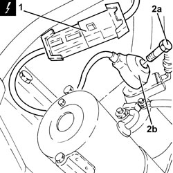
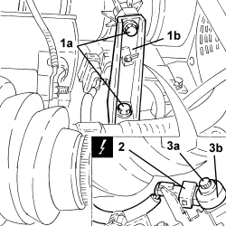

5510C42 DETONATION SENSOR (ONE) - R.R.
- Path
- Procedures > 55 ELECTRICAL EQUIPMENT > 5510 ENGINE IGNITION > 5510C COIL, ECU, SENSORS > 5510C42 DETONATION SENSOR (ONE) - R.R.
- Kind
- repair procedure (removal / refitting; the operation number is the code)
- Applies to
- engines: 1.8, 2.2; all production periods
- Interactive page
- https://sloeber94.github.io/elrnDB-fCrm/en/#/194000698
Applies to: engines: 2.2; all production periods
 Removing
Removing
 Refitting
Refitting- Position the vehicle on a lift.
- Make sure that the ignition key is in the OFF position, then disconnect the battery terminal (-).
Description | Connector | |
|---|---|---|
- | Battery |
1. Disconnect the electrical connection for the knock sensor.
Description | Connector | |
|---|---|---|
1 | Detonation sensor |
2. Undo the bolts (2a) and remove the detonation sensor (2b).

Applies to: engines: 2.2; all production periods
Refitting
Removing- Position the detonation sensor in its housing and secure it tightening the bolt to the recommended torque.
Component | Fastening | dia | Value (daNm) | Validity |
|---|---|---|---|---|
Detonation sensor | Bolt | M8 X 1.25 | (engine crankcase side) 2.3 | 2.2 |
- Connect the electrical connection to the knock sensor.
- Connect the negative battery terminal.
- Remove the vehicle from the lift.
Applies to: engines: 1.8; all production periods
Removing
RefittingOp. 7055B54 UNDER ENGINE PROTECTION/GUARD - R.R.
1. Undo the bolts (1a) and remove the modular chamber mounting bracket (1b).
2. Disconnect the electrical connection for the knock sensor.
Description | Connector | |
|---|---|---|
2 | Detonation sensor |
3. Undo the bolt (3a) and remove the detonation sensor (3b).

Applies to: engines: 1.8; all production periods
Refitting
Removing- Position the detonation sensor in its housing and secure it tightening the bolt to the recommended torque.
Component | Fastening | dia | Value (daNm) | Validity |
|---|---|---|---|---|
Detonation sensor | Bolt | M8 | 1.5 ÷ 2.5 | 1.8 |